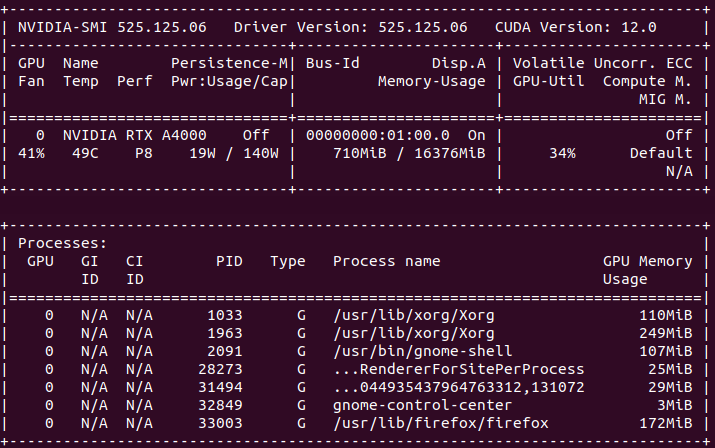
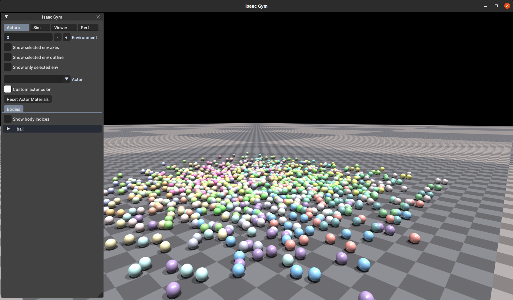
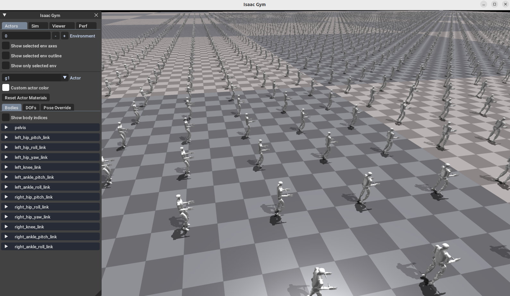
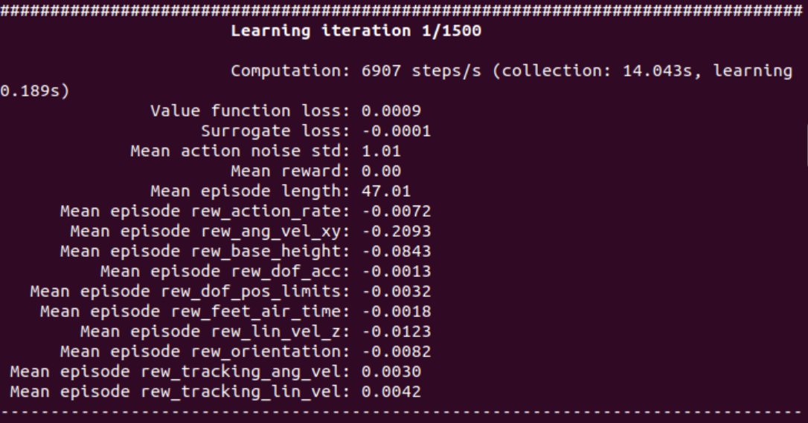

RL例程
本文档将提供强化学习控制 G1 的简单示例。下文将介绍如何使用 isaac_gym 仿真平台训练 G1 控制算法。
硬件准备
由于 isaac_gym 仿真平台需要 CUDA,本文建议硬件需要配置 NVIDIA 显卡(显存>8GB、 RTX系列显卡)，并安装相应的显卡驱动。建议系统使用 ubuntu18/20，显卡驱动 525 版本

环境配置
建议在虚拟环境 conda 中配置该环境。
1. 创建虚拟环境
```bash
conda create -n rl-g1 python=3.8
2. 激活虚拟环境
```bash
conda activate rl-g1
- 安装
CUDA，pytorch
pip3 install torch==1.10.0+cu113 torchvision==0.11.1+cu113 torchaudio==0.10.0+cu113 -f https://download.pytorch.org/whl/cu113/torch_stable.html
注意 numpy库版本不要太高，建议安装 1.23.5版本。
- 下载 Isaac Gym Preview 4 仿真平台，解压后进入
python目录，使用pip安装。
# current directory: isaacgym/python
pip install -e .
- 运行
python/examples目录下的例程，验证安装是否成功。
# current directory: isaacgym/python/examples
python 1080_balls_of_solitude.py
若安装成功，可看到如下窗口。

6. 安装rsl_rl库（请使用1.0.2版本） ```bash git clone https://github.com/leggedrobotics/rsl_rl cd rsl_rl git checkout v1.0.2 pip install -e .
# 模型训练使用
1. 下载宇树官方示例代码
```bash
git clone https://github.com/unitreerobotics/unitree_rl_gym.git
- 修改
legged_gym/scripts/train.py，legged_gym/scripts/play.py中的sys.path.append("/home/unitree/h1/legged_gym")为自己的路径。 - 激活强化学习虚拟环境
conda activate rl-g1
- 切换到 legged_gym/scripts 目录下，执行训练指令，开始训练。
python3 train.py --task=g1
修改 train.py 文件中的 args.headless 参数，可开启或关闭可视化界面。
isaac_gym 出现如下界面，则训练开始。

终端输出窗口如下：

训练 1500 次后，运行测试指令。
python play.py --task=g1